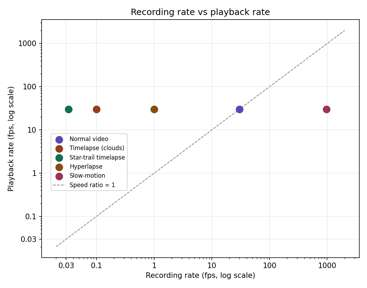
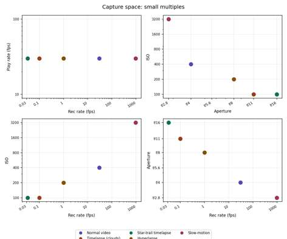

A Structured Model of the Measurable Variables in Video Capture, Processing, and Assembly
The recording technology parameter space is a structured map of the measurable choices and consequences that occur across a moving-image workflow. The model is deliberately technical: it restricts itself to quantities that can be measured or set numerically (or, where necessary, categorically), and treats named creative techniques as regions within that space rather than as additional axes of it. This keeps the technical core small and falsifiable while leaving room for an open-ended catalogue of technique as the space is explored.
Section 2 gives the structural overview and the map. Section 3 is the primary reference: every variable currently in the model, with its symbol, unit, and domain. Sections 4–6 cover the three structural mechanisms that connect and constrain those variables — bridge variables, derived quantities, and boundary/feasibility conditions. Section 7 presents two graphs produced from the model. Section 8 catalogues named techniques as loci. Sections 9–10 address terminology precision and prior art. Section 11 discusses what the model has revealed so far, Section 12 lists known gaps, and Sections 13–14 are reference material.
The parameter space is organized into six component spaces. Five describe properties of a single shot (Meta, Content, Capture, Audio, Post); one, Editing, describes relationships across multiple shots and is the only component space whose variables are not properties of a single moment. Two confirmed bridge variables connect component spaces that would otherwise be fully independent, and a growing set of derived quantities are computed from other variables rather than chosen directly.
Full unit and domain breakdown for every independent variable currently in the model, organized by component space. Domains marked technological are bounded by current hardware and expected to shift over time; domains marked physical or definitional are not.
| Variable | Symbol | Unit | Domain | Constraint type |
|---|---|---|---|---|
| Lens type | — | categorical | finite set (prime, zoom, macro, fisheye, tilt-shift, …) | definitional |
| Focus distance | d | m | (0, ∞) | physical |
| Spectrum | — | categorical | {visible, infrared, ultraviolet, X-ray, …} | technological — hard wall between bands, not a soft limit |
| Resolution* | R | px × px | positive integer pairs | technological; * tier-2 mid-exposure variability (see §6) |
| Sensor size | — | mm × mm (w × h) | positive reals | technological |
| Aspect ratio | — | w:h | [1, ~2.4] — landscape only | definitional; portrait achieved via Roll (§3.2), not a separate domain |
| Variable | Symbol | Unit | Domain | Constraint type |
|---|---|---|---|---|
| Camera position | (x, y, z) | m | ℝ³ (unbounded) | physical |
| Camera yaw | ψ | degrees | [0, 360) — cyclic | definitional |
| Camera pitch | θ | degrees | [−90, 90] | physical — gimbal-lock boundary at the poles |
| Camera roll | φ | degrees | (−180, 180] — cyclic | definitional; 90° is the landscape→portrait case |
| Variable | Symbol | Unit | Domain | Constraint type |
|---|---|---|---|---|
| Recording rate | R | fps | (0, +∞) | physical — time only moves forward during capture |
| Playback rate | P | fps | ℝ (all reals, including 0) | directional; P = 0 combined with n = 1 is the precise definition of a photograph (§8) |
| Exposure | te | sec | (0, 1/R] | physical — bounded by the frame interval itself |
| Aperture | N | f/N | ~[0.95, 64] | technological (lower) / diffraction-physical (upper) |
| ISO | S | ISO number | ~[25, 100,000+] | technological — ceiling rises with sensor tech |
| Time | t | sec | [0, shot duration] — continuous | physical; the spine every other Capture variable is a function of |
| Variable | Symbol | Unit | Domain | Constraint type |
|---|---|---|---|---|
| Sample rate | fs | Hz | standard values (44.1k, 48k, 96k, …) | technological |
| Bit depth | — | bits | {16, 24, 32} | technological |
| Gain | — | dB | hardware-bounded | technological |
| Mic position | (x, y, z) | m | ℝ³ | physical |
| Mic heading | (ψ, θ, φ) | degrees | same as camera heading | physical — roll included since directional pickup patterns (§3.4 below) can make mic roll acoustically meaningful, not just cosmetic |
| Pickup pattern | — | categorical | {omni, cardioid, shotgun, …} | definitional — gates whether heading has any effect |
| Variable | Symbol | Unit | Domain | Constraint type |
|---|---|---|---|---|
| Color grading | — | curve / categorical | function space | definitional |
| LUTs | — | mapping | function space | definitional |
| Contrast | γ | slope, unitless | (0, ∞), 1 = neutral | definitional |
| Blur / sharpness | σ | px | [0, ∞) | physical — Gaussian kernel spread |
| Variable | Symbol | Unit | Domain | Constraint type |
|---|---|---|---|---|
| Cut points | {t1, t2, …} | sec | ordered subset of shot duration | definitional |
| Sequence order | π | permutation | Sn (symmetric group) | definitional |
| A/V sync offset | Δt | sec | ℝ — sign gives J-cut vs. L-cut | definitional |
| Pacing | — | cuts/min | [0, ∞) | physical |
A bridge variable is one whose value is shared between two component spaces — it can be set, or its effect realized, at either end.
| Variable | Symbol | Unit | Connects | Rationale |
|---|---|---|---|---|
| Focal length | f | mm | Content ↔ Meta | Determines field of view (Content-relevant) but is a lens property set in Meta |
| White balance | K | kelvin | Capture ↔ Post | Can be set live at capture or corrected equivalently in grading |
Values that resemble independent variables but are fully determined by other variables. The tell: if a value falls out once the rest of the space is fixed, it is not an axis. Directly analogous to the SI distinction between base quantities (length, time) and derived quantities (velocity, force).
| Quantity | Formula |
|---|---|
| Frame count | n = ⌊R × t⌋ |
| Depth of field | DoF = f(N, focal length, focus distance) |
| Framing | Fr = f(distance, focal length, aspect ratio, sensor size) |
| Speed ratio | v = P / R |
| Shutter angle | α = (te / (1/R)) × 360° |
| Distance to a point | |Δ| = |camera position − point| |
| Field of view | FOV = f(sensor size, focal length, aspect ratio) — crop-consistent form in §5.1 |
| Native sensor aspect ratio | = sensor width / sensor height |
A naive formula (horizontal FOV fixed by sensor width and focal length, vertical FOV obtained by dividing by aspect ratio) allows a portrait crop to capture more vertical field of view than the sensor physically sees — a real error, not a rounding artifact. The corrected form holds whichever dimension is not being cropped at its native value:
native horizontal FOV = 2·atan( sensor width / (2 × focal length) )
native vertical FOV = 2·atan( sensor height / (2 × focal length) )
if target aspect ≥ native aspect: horizontal FOV = native; vertical FOV shrinks
else: vertical FOV = native; horizontal FOV shrinks
This guarantees a crop only ever removes field of view. It is the correct model for genuine in-camera or in-post cropping; it is not the mechanism this project now uses for portrait video specifically (see Camera roll, §3.2, and Loci, §8).
Speed ratio (v = P/R) separates timelapse, slow-motion, and normal-speed footage. Points below the reference line are sped up; points above are slowed down.

Reading across a row of shots reveals cross-axis relationships a single scatter plot cannot: the slow-motion shot's wide aperture and high ISO compensate for its fast recording rate; the star-trail timelapse's narrow aperture and low ISO reflect its already-long per-frame exposure.

A locus is a region of a component space defined by a condition on its variables — the precise term for what this document informally calls a "subspace." A named technique is a label for a locus, not an additional dimension.
| Locus | Defining condition | Space |
|---|---|---|
| Normal video | v ≈ 1 | Capture |
| Timelapse | v ≫ 1 (R ≪ P) | Capture |
| Slow-motion | v ≪ 1 (R ≫ P) | Capture |
| Photograph | n = 1, P = 0 | Capture |
| Star-trail timelapse | Timelapse ∧ te ≈ 1/R | Capture |
| Hyperlapse | Timelapse ∧ camera position varies between frames | Capture + Content |
| Stop-motion | n > 1, frames not spaced by a continuous rate | Capture |
| Zoom-burst | Focal length varied continuously during one exposure | Meta (dynamic) |
| Rack focus (optical) | Focus distance varied over Time within a shot | Capture (dynamic) |
| Digital focus reveal | Blur σ keyframed over an edited timeline | Post (dynamic) — convergent effect with rack focus |
| Vertical / portrait video | Roll ρ = 90° on a landscape-aspect frame | Content |
| J-cut / L-cut | Δt ≠ 0 at a cut point | Editing |
A linear-algebra subspace must contain the zero vector and be closed under addition and scalar multiplication. Categorical variables (lens type, spectrum, pickup pattern) and bounded-positive domains (aperture, ISO) fail this test, so the structure documented here is more accurately a parameter space — a general term from physics and engineering for a space of measurable settings, requiring no vector-space axioms. The six named spaces are its component spaces; named techniques (§8) are loci, not subspaces in the linear-algebra sense. "Space" and "subspace" persist as informal working names throughout this document; this section is the precise cross-reference.
Adelson & Bergen's 1991 plenoptic function models all light in a scene as a 7-dimensional function of position (x, y, z), direction (θ, Φ), wavelength, and time — closely related to this document's Content and Meta spaces, reached independently from the opposite direction (modeling light itself, rather than capture settings).
Standard computer vision divides camera parameters into intrinsic (focal length, sensor and resolution properties) and extrinsic (position and orientation) — matching this document's Meta/Content split. This division was reconstructed independently before the established terms were identified; Section 2's Meta/Content pairing is the same distinction under different names.
| Term | Meaning |
|---|---|
| Parameter space | A space of measurable settings; does not require vector-space axioms |
| Component space | One of the six named factors making up the parameter space |
| Locus | A region of a component space defined by a condition on its variables |
| Bridge variable | A variable shared by, and settable from, two component spaces |
| Derived quantity | Computed from other variables; not independently chosen |
| Feasibility tier | Impossible by definition / theoretically valid but unbuilt / achievable today |
| Convergent effect | Two structurally different mechanisms producing a similar visible result |
| Speed ratio | Playback rate ÷ recording rate |
| Exposure triangle | Exposure time, aperture, and ISO jointly trading off to hold brightness |
| Shutter angle | Exposure time expressed as a fraction of the frame interval |
| Time spine | The continuous axis every Capture-space variable is a function of |
| Symbol collision | Two variables assigned the same letter; resolved by context or renaming |
| Intrinsic / extrinsic parameters | Standard computer-vision terms matching Meta (intrinsic) and Content (extrinsic) |
| Plenoptic function | Adelson & Bergen's 1991 7D model of light; related prior work (§10) |